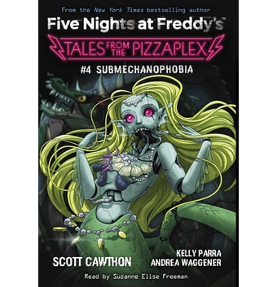

*The Closer We Get* é o quarto livro da série *Tales from the Pizzaplex*. A história segue um grupo de adolescentes que se tornam parte de uma experiência misteriosa e sombria que acontece dentro do Pizzaplex. O livro mistura mistério, suspense e momentos de grande tensão.
O livro segue os eventos que acontecem quando os adolescentes começam a perceber que há algo de errado em suas interações com os animatrônicos e os outros trabalhadores da pizzaria. As tensões aumentam conforme o mistério vai sendo revelado.